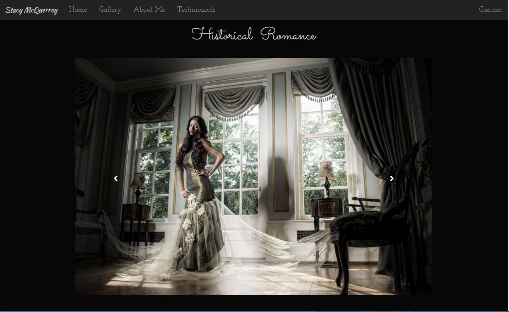

Portfolio
-
Hank's Big Adventures
For the first webpage I created, I needed to have some images to display the responsive design learned through my courses. Offered through Michigan State and Johns Hopkins University. While on our vacations - I took some pictures of a little stuffed porcupine. I wanted to show that using bootstrap I was able to create seamless pages that look great on all devices.

-
Chris Douglas Photography
When creating this site, I wanted to give it a clean look, leaning more on the side that a wedding photographer would look for. I wanted to make this page a little more interactive and have a 'carousel effect' as a main photo revolved through 10 images every 7 seconds. I update this site regularly when my client has new images to add. The gallery pages are responsive and the images stack differently depending on the device.

-
Stacy McQuerrey Photography
I created this site for a photographer that focuses on a darker fantasy element and I wanted that to show through on her page. The gallery involves some javascript that allows you to click through the images. I changed many of the images on the home page to differ depending on the device you are on. So the image you see on an iPhone will be different than what is displayed on an Android device.
 -
Fantasy Benefit Group Shoot
This pro-bono project involved putting together a webpage quickly for a photographer in the community that needed help when she and her family were going to lose their home. For this event I planned and created this site. In the end we raised enough money for them to keep their home. The page was from a premade template I was able to quickly understand the code and create it to fit what we needed for such short notice.

About Me
-

So much to learn and so little time
Throughout my life I have had many hobbies, and have learned many things along my career path. Years after I first learned about web development, I decided to return to it and have been learning all that I can. I create unique mobile responsive sites that are catered to each client depending on their needs or wants. Throughout my entire working career, I have had the privelage of working with customers and I aimed to understand what they were asking for and provide a solution. Whether it was working in retail, warehousing or developing websites with a client, it is important to understand and translate their needs into actions and results.
Each role that I have taken on I aim to learn all that I can. Adding responsibilities, which give me a better understanding of most operations as a whole. With Web Development, I have worked to get my hands on every resource that I can. This ranges from meet-ups in the community, to online courses, and even books on a few subjects. I have no plans on stopping anytime soon, and have been working towards an online BS/BA CIS Degree.
Resume || LinkedIn Profile
Certificates
While I audited some courses on Coursera, I felt there were some courses that were worth displaying my knowledge and the information I have learned through some courses from the University of Michigan.